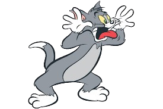

TOM
Tom adora perseguir o rato Jerry mas, quase toda vez que tenta capturá-lo, vive se esborrachando, apanhando ou se metendo em encrencas. Em algumas situações, ele convive amigavelmente com Jerry.
JERRY
Simpático rato, o qual costuma fugir do Tom, enquanto são inimigos. Jerry adora queijo e também aprontar com o Tom. Uma das características do Jerry é sua esperteza. Em quase todas às vezes se dá bem. E em algumas situações convive amigavelmente com o Tom.